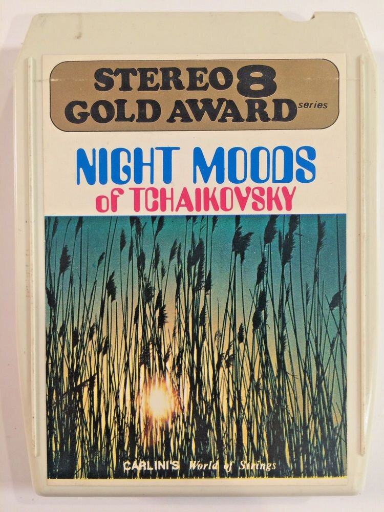
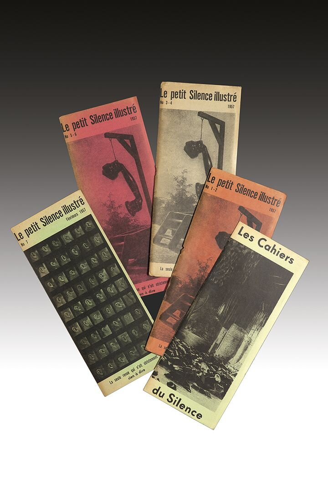
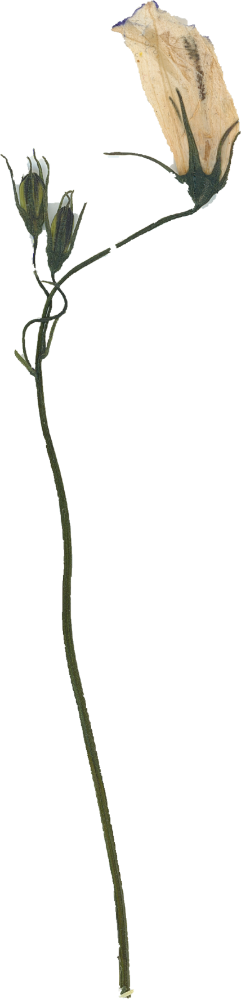

Jean Rhys wikipedia.org/wiki/Jean_Rhys
Gen Astro — Pioneer Works pioneerworks.org/broadcast/generation-astrologyBurning Lights
Bella Chagallmemory / language / ritual / domestic light

source is not a bibliography.
things found while moving through the web.
things found while moving through the web.